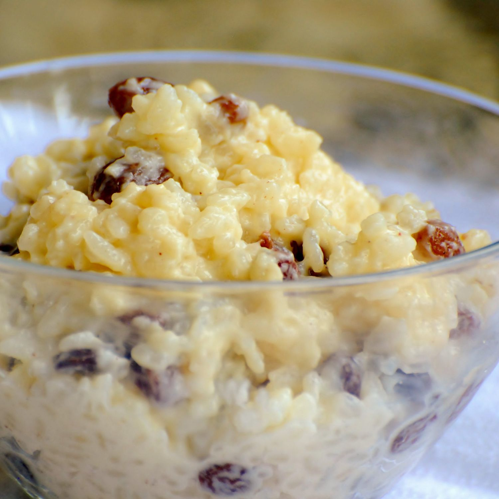

Rice Pudding

Description
Recipe for the large batch of sugar-free rice pudding I regularly make for myself at least once a week.
Delicious, good source of carbs and clean ingredients, can be topped with whatever you desire.
Ingredients
- 100g Rice of Choice
- 600ml Milk of Choice
- Pinch of Salt
- Optional Add 20g Butter, 40g Honey, Splash of Vanilla Extract
Steps
- Soak Rice in 200ml of lukewarm water for at least 30 minutes
- Drain rice, add milk and bring to boil
- Once boiling, reduce to a simmer, put on lid and cook for 20 minutes, stirring every 5 minutes
- Before final 5 minutes of cooking, add a pinch of salt before stirring
- Once 25 minutes up, take off the head and allow to settle for 5 minutes
- Serve with suggested optional ingredients of other toppings of your choice
- Enjoy!